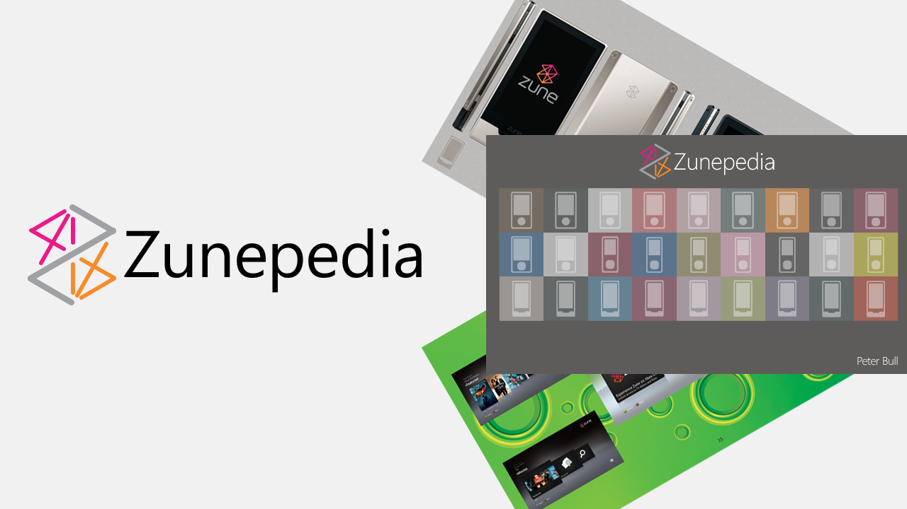

Zunepedia Launch
This article was originally published 14th September 2021 on Linkedin
Launching Zunepedia, the digital coffee table book about Zune
In August 2021 was when I announced in the article Why one UK software developer is creating a digital coffee table book about Zune, that I was creating a digital coffee table book about Zune. Well today that time has arrived, and I have finally released Zunepedia, an unofficial photographic journey of the history of the Zune devices, hardware, services and the community that keeps it alive to this day, and it is now available to download for free at zunepedia.com
It is fifteen years to the day since Microsoft first announced the original Zune on the 14th of September 2006. Although it is also about decade after the Zune devices were discontinued, and although that happened it is good to mark that anniversary with the release Zunepedia, which goes from the beginning, right through to the end of Zune along with showing a variety of previously rarely seen photographs of the devices, services and software, along with being presented in hopefully new and interesting ways too.
Zunepedia also celebrates the community who keep Zune alive to this day, with their support for the devices and their amazing collection of Zune devices, these often includes rare and employee only models. Some photographs from the community including their collections are featured. Although own collection may only amount to a Zune 80GB and Red Zune HD from Zune Originals along with the A/V dock. However, my digital collection, which I amassed from Microsoft resources and press releases when running my own website about Zune back in the day, is quite large and has been brought back to life, in part by the creation of this book.
I've never written a book of any kind, nor do I profess to be a designer or an author. My background is of a .NET software developer in the UK, where Zune devices were never even officially released. However, I have enjoyed the process of curating the various assets and admit it has been a challenge to make something I was happy with, but I'm pleased with the result and the support from the community has been amazing. That support has been crucial to getting Zunepedia where it is and is my gift to those who not only consider themselves fans of Zune but those who may discover it for the first time with Zunepedia.